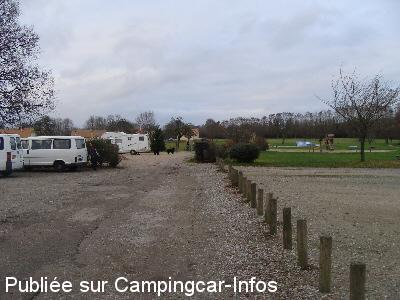

APN = Parking toléré jour/nuit de :
SAINT DENIS SUR SARTHON
(N° 272)
Accès/adresse :
La Grande Avenue N12
Aire de l'Etansiau
61420 SAINT DENIS SUR SARTHON
Aire de l'Etansiau
61420 SAINT DENIS SUR SARTHON
Latitude : (Nord) 48.45764° Décimaux ou 48° 27′ 27′′
Longitude : (Ouest) -0.04827° Décimaux ou 0° 2′ 53′′
Tarif : Gratuit
Services :

Jeux pour enfants
Tous commerces dans le bourg
Autres informations :
10 emplacements
Proximité étang

Le 04/01/2012 par René
de
René Lucas
le 17/09/2014 :
De passage pour une nuit le 15 septembre 2014.
Aire de repos calme, agréable et bien entretenue au bord d'un parc et d'un étang.
De passage pour une nuit le 15 septembre 2014.
Aire de repos calme, agréable et bien entretenue au bord d'un parc et d'un étang.
de
chantal et jack
le 22/12/2009 :
De passage vers le 10 décembre, on a trouvé un coin fort tranquille, au bord d'un étang, WC encore ouverts du reste et eau aussi. Alors un détour se mérite, vive les coins tranquilles. Merci à St Denis sur Sarthon de nous accueillir.
De passage vers le 10 décembre, on a trouvé un coin fort tranquille, au bord d'un étang, WC encore ouverts du reste et eau aussi. Alors un détour se mérite, vive les coins tranquilles. Merci à St Denis sur Sarthon de nous accueillir.